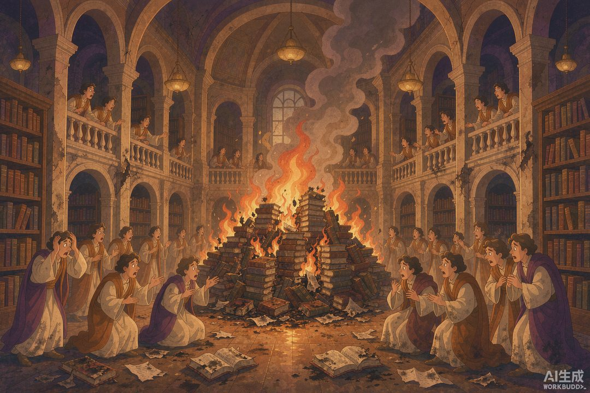
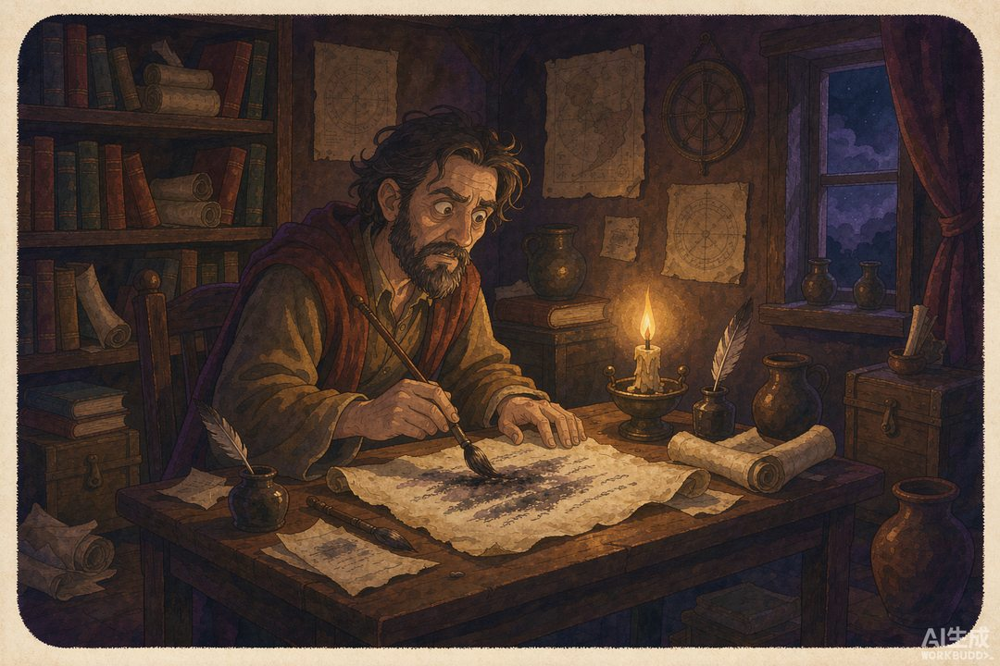

|
信息传播那些事儿 · 卷二 · 第 35 篇 |
|
图书审查起源 —— 从"定本"到"文字狱"，一把越收越紧的闸 |
▲ 审查官盖下"定本"之印，邸报方能下发（AI 生成示意图）
|
上一段民歌能进宫被"采"，可一旦唱错调、碰了逆鳞，麻烦就来了。古代对言论的管控，不是一天长成的。它从一把"事先审查"的闸开始——宋人给邸报设了"定本"，清人借着修书把禁书烧成了山。今天顺着这条线，看"图书审查"是怎么一步步起源、又一步步收紧的。 |
信息管理有两端：一端是让人知道（邸报、采诗），一端是不让人知道（审查、禁毁）。卷二走到倒数第二篇，终于要碰这条暗线——它和"传播"是同一条河的两岸。
一 | 最早的"事先审查"：定本 |
宋真宗咸平二年（999 年），朝廷给邸报立了条铁规矩，叫"定本"制度：都进奏院把编好的官报样张，先送枢密院审查；审查批准后的"样本"叫"定本"，进奏院必须照此抄发，一个字不能改。这不是建议，是强制。
新闻史学者戈公振后来评价：西方的官报是给百姓看的，中国的官报是给官员看的——而"定本"把"给官员看什么"的决定权，彻底收归中央。这被认为是世界上最早的官方新闻检查制度。注意一个词："事先"。它不是出了事再查，而是还没发就先卡。

▲ 寓禁于征：修一部"全书"，烧掉的书和它收的几乎一样多（AI 生成示意图）
二 | 能传什么，不能传什么 |
"定本"划了红线：只准传"常程申奏及经尚书省已出文字"——也就是走完流程、可以公开的日常公文；"实封文字、或事干机密者"一律不许传。谁敢擅自传"非定本"的内容，重罚；还设了赏钱鼓励告发。
等于给邸报装了一道内容防火墙：能上版的，都是朝廷想让你知道的；不能上版的，连提都不许提。宋代的"小报"（民间非法报纸）恰恰靠钻这个空子活——专报官报不发的"朝廷机事"，所以屡禁不止。
三 | 焚书：最粗暴的原点 |
把"禁书"推到极致的，最早是秦始皇。公元前 213 年，李斯建议焚《诗》《书》百家语，只留医药卜筮种树之书——这是历史上最早的大规模禁毁。手段糙、动静大，但逻辑和后来的审查一脉相承：不让我说的话，连书一起抹掉。
只不过秦法是"事后销毁"，宋代"定本"是"事前拦截"——一个在尾巴上砍，一个在源头上堵。审查的两副面孔，从这两件事就全齐了。

▲ 文字狱：文人夜里自己删改书稿，生怕一个字惹祸（AI 生成示意图）
四 | 四库全书：修书与毁书并行 |
清代把"审查"玩成了系统工程。乾隆朝修《四库全书》（1772 年下诏，1782 年首部成），表面是盛世修典，暗地里"寓禁于征"——借全国征书的机会，把认为不利于统治的典籍焚毁、删改。学者统计，前后约禁毁书籍三千多种、十五万多部，数量几乎和收录的相当；大量孤本善本就此消失，连明代档案都被系统销毁。
修一部"全书"，烧掉的书和它收的书一样多。这是审查最矛盾、也最触目惊心的一幕：同一只手，一边在保存文化，一边在抹掉文化。
五 | 文字狱：一把悬在笔尖的刀 |
比禁书更吓人的是"文字狱"：不是书有问题，是字里行间被读出"问题"。清初庄廷鑨《明史》案（1663 年），因书中用了明朝年号，已死的人被开棺戮尸，牵连致死上百；戴名世《南山集》案（1711 年），因涉及南明史实，被斩。文人吓得"避席畏闻文字狱，著书都为稻粱谋"。
当审查从"管书"升级到"管人、管念头"，信息的闸门就彻底焊死了。从木铎采诗到文字狱，中间的落差，就是一部"言论空间越来越小"的古代史。
|
数字锚点 · 审查何时收紧 | |||||||
|
|
🔔 下篇预告 · 第 36 篇《卷二小结·钩子接卷三》—— 从木铎采诗到文字狱，卷二走完了一条"信息从自由到被管"的长路。下一篇，我们站在卷二尽头回看全卷，并通向卷三——那个将要改变一切的印刷术，尤其是古登堡。 |
史料转引自宋代"定本"制度（咸平二年，枢密院审查）记载、秦始皇焚书（前213年）、清代文字狱（庄廷鑨《明史》案、戴名世《南山集》案）及《四库全书》"寓禁于征"相关研究公开综述；配图为 AI 生成示意图。